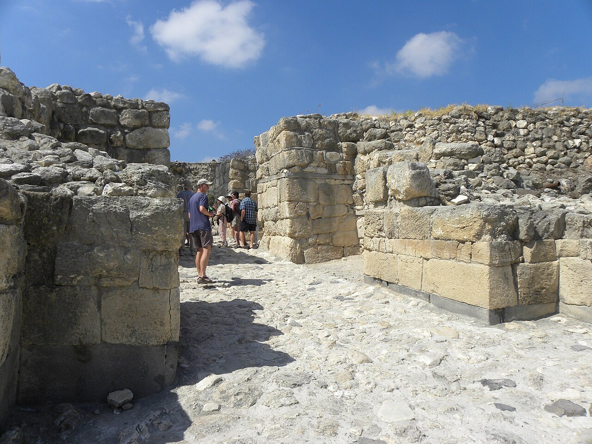

Megiddo Gates

- Find Name
- Megiddo Gates
- Historical Period
- Iron Age II
- Artifact Date
- c. 10th-9th century BC
- Date Discovered
- 1925
- Discovery Location
- Megiddo, Israel
- Current Location
- In situ, Megiddo National Park, Israel
- Timeline Era
- United Monarchy
- Description
- Monumental six-chambered city gates and water systems excavated at Megiddo, the strategic fortress guarding the Jezreel Valley pass. Similar gates at Hazor and Gezer led excavator Yigael Yadin to link all three to Solomon's building programme, though some scholars date Megiddo's gate to the following century under the Omrides.
- Biblical Significance
- First Kings names Megiddo, Hazor, and Gezer together as Solomon's fortified cities, and the matching gates remain a famous, debated illustration of that verse. Whether dated to Solomon or shortly after, they confirm a powerful Iron Age kingdom in Israel, and Megiddo's name lives on in Revelation's Armageddon.
- Evidence Class
- Contextual
- Interpretations
- Scholars debate the gates’ date: the Bible credits Solomon with fortifying Megiddo (1 Kings 9:15), but archaeologists divide between a tenth-century Solomonic date and a ninth-century Omride one.
- Scripture Illuminated
- Related People
- Related Books